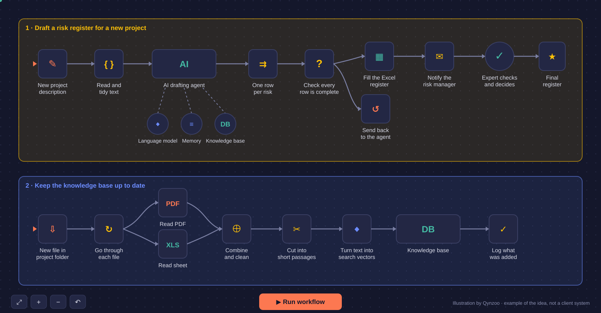

AI-conceptenErvaring van de oprichterIngenieursbureau
Risicoregisters voor infrastructuur, opgesteld met AI
Ervaring van de oprichter, geen Qynzoo-project. Onze oprichter Mostafa deed dit werk als werknemer van Royal HaskoningDHV, voordat hij Qynzoo begon. Het systeem is van die werkgever. We laten het zien omdat deze ervaring direct past bij de diensten die we aanbieden. We verkopen dit systeem niet. We brengen een vergelijkbaar idee, en elke oplossing die we bouwen wordt vanaf nul ontworpen en gemaakt voor jouw bedrijf.
Mostafa bouwde een AI-assistent die van een projectomschrijving een concept-risicoregister maakt, zodat risicomanagers elk nieuw project beginnen met een stevige basis in plaats van een leeg blad.
Resultaat: een nieuw project starten ging van een volle werkdag naar een paar uur.
ERVARING OPRICHTER · RISICOREGISTERS
Van een leeg vel naar een eerste versie
OUDE RISICOREGISTERS
AI-ASSISTENT
NIEUW RISICOREGISTER
Register project A
Register project B
Register project C
AI-assistent
vergelijkbare risico's zoeken
nieuw register opstellen
Op basis van eerdere projecten
RISICOOORZAAKMAATREGEL
Gecontroleerd door de risicomanager
VOORHEENeen volle dag
NUeen paar uur
Per nieuw project. De assistent haalt het lege vel weg; de risicomanager beslist.
Animatie: een AI-assistent doorzoekt oude risicoregisters, vindt vergelijkbare risico's en stelt een nieuw register op, dat de risicomanager controleert. Een project starten gaat van een volle werkdag naar een paar uur.
ERVARING OPRICHTER · RISICOREGISTERS
Van een leeg vel naar een eerste versie
OUDE RISICOREGISTERS
Register project A
Register project B
Register project C
AI-ASSISTENT
AI-assistent
vergelijkbare risico's zoeken
nieuw register opstellen
Op basis van eerdere projecten
NIEUW RISICOREGISTER
RISICOOORZAAKMAATREGEL
Gecontroleerd door de risicomanager
VOORHEENeen volle dag
NUeen paar uur
Per nieuw project. De assistent haalt het lege vel weg; de risicomanager beslist.
Animatie: een AI-assistent doorzoekt oude risicoregisters, vindt vergelijkbare risico's en stelt een nieuw register op, dat de risicomanager controleert. Een project starten gaat van een volle werkdag naar een paar uur.
Het probleem
Elk nieuw infrastructuurproject begint met een leeg risicoregister. Normaal betekende dat: oude registers doorzoeken, relevante risico's kopiëren en nieuwe bedenken. Een risicomanager was hier het grootste deel van een werkdag mee bezig voordat de echte beoordeling kon beginnen.
De aanpak
Mostafa bouwde een AI-assistent in n8n, gekoppeld aan een gestructureerde database met bekende infrastructuurrisico's. Op basis van een omschrijving van het nieuwe project vindt hij relevante risico's uit eerdere projecten en schrijft hij een concept-risicoregister, met oorzaken en maatregelen, direct in een Excel-bestand dat klaarstaat voor de risicomanager.
n8nRAGAutomatiseringExcel-koppeling

Zo werkt dit soort assistent. Illustratie getekend door Qynzoo om het idee uit te leggen; het is niet het oorspronkelijke systeem.
Resultaten
Een nieuw project starten ging van een volle werkdag naar een paar uur. De assistent vervangt het oordeel van de risicomanager niet. Hij haalt het lege blad en het kopieerwerk weg, zodat de risicomanager zijn tijd besteedt aan beslissingen in plaats van data-invoer.